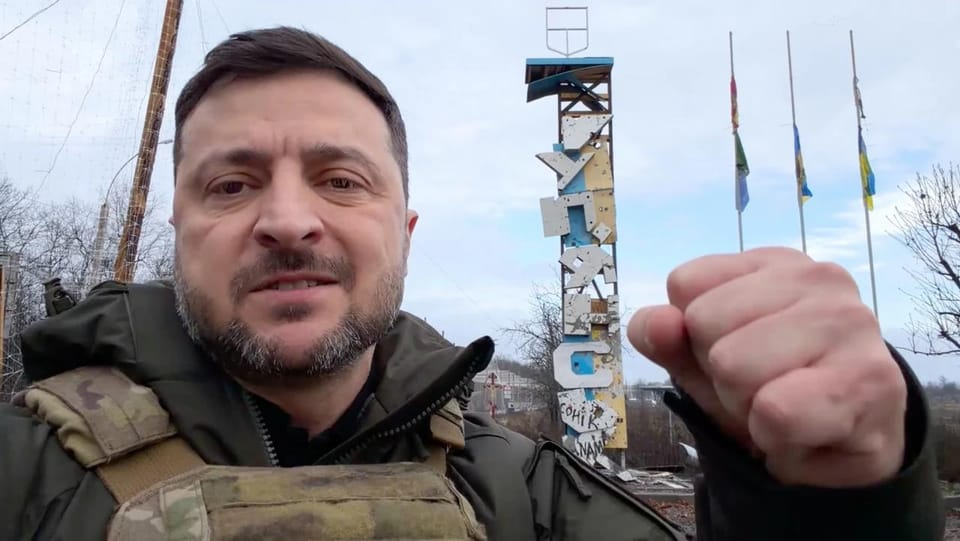

世界苦茶12月13日新闻 | 30条 | 黎智英案下周一宣判

黎智英案下周一宣判 | 联合国呼吁释放桂敏海 | 特朗普称泰柬同意停火 | 中国准备5000亿的芯片激励计划
苦茶数据
美元兑人民币：7.05（昨日7.05，前日7.05）
美元兑日元：155.75（昨日155.73，前日155.19）
上证指数：3889（昨日3871，前日3873）
标普500指数：6827（昨日6901，前日6864）
比特币：90429（昨日92281，前日89995）
布伦特原油：61.12（昨日61.67，前日60.99）
中国新闻
• 联合国小组吁释放桂敏海 北京：反对任何组织干涉司法主权。
针对联合国工作组呼吁中国政府立即释放华裔瑞典籍书商桂敏海，中国外交部表示反对任何组织干涉中国司法主权。据法新社报道，联合国任意拘留问题工作组在今年10月通过并于星期三公布的意见中指出，桂敏海的拘留属于“任意拘留”。WGAD说，综合案件情况，适当的解决方法是立即释放桂敏海，并依据国际法给予应有的赔偿和其他救济。WGAD由联合国人权理事会任命的五名独立专家组成，负责调查被指任意或不符合国际人权标准的拘留案件。中国外交部发言人郭嘉昆星期四在例行记者会上说，中国法院以严重的刑事罪名对桂敏海作出判决。
• 中印外交磋商愿妥处分歧 印度加快审批中国商务签证。
中印举行新一轮外交官员磋商，双方表示将恢复机制性对话，妥处分歧和敏感问题。印度也简化审批，加快中国专业人士商务签证办理速度，被视为是促进两国关系的重要举措。据中国外交部官网消息，中国外交部亚洲司司长刘劲松星期四在北京，同印度外交部东亚司联秘高士举行新一轮中印外交部官员磋商。消息稿称，双方表示要促进双边交往，恢复机制性对话，妥处分歧和敏感问题，加强多边机制和国际地区事务沟通协调。双方积极评价此轮磋商“及时高效、气氛良好、共识不少”。路透社星期五也报道，印度已简化行政审批流程，以加快中国专业人士商务签证办理速度。中国外交部发言人郭嘉昆当天在例行记者会上证实此事。
• 大埔火灾调查启动 港府要求独立委员会九个月内交报告。
香港政府委任退休法官陆启康等三人组成独立委员会调查大埔火灾，并要求在九个月内完成报告。特首李家超说，他将在本月赴北京向中国国家主席习近平述职时汇报相关情况。综合香港01和星岛日报网等报道，李家超星期五召开记者会宣布，委任陆启康担任独立委员会主席，并由行政会议成员陈健波和港铁主席欧阳伯权担任成员。李家超介绍，委员会的职权范围涵盖多方面，包括火势迅速蔓延及造成伤亡与损毁的原因；消防装置的配置、运作及监督；维修工程的施工安全及监管机制是否足够；相关验证与检测制度是否有效；以及政府人员、专业人士和承建商在各环节中的角色与责任。他也透露，他12月赴北京述职时，将向习近平汇报火灾情况。（翻评：这不是独立调查委员会，并不具备法律意义上的调查权。香港已经完了。）
• 黎智英案下周一宣判 学者预料短期内对中美关系有负面影响。
香港壹传媒集团创办人黎智英涉嫌勾结外国势力的案件，将在下周一宣判。受访学者预计，判决出来后，美国会强烈谴责，短期内会对中美关系带来负面影响。这起案件在2023年12月开审，法庭经过156天审讯，在今年8月28日完成所有聆讯程序。司法机构网页本周五显示，案件定在下周一早上10时裁决，预料需时一小时。据法新社报道，无国界记者组织周五发表声明，对香港司法机构仓促地通知判决日期感到愤怒，批评这再次证明当局对黎智英的审判是多么随意和非法。声明指出，黎智英已被囚禁在恶劣的监狱环境五年，只因为他是香港其中一家备受赞誉和独立传媒机构的创办人，“审讯虚伪而且与法治完全无关”。
• 美国批中国雷达照射日本军机 学者判断不会升级成军事对峙。
日本指责中国上周在军事演习中，用雷达照射并锁定日本自卫队飞机后，美国首次批评中国此举不利于地区和平与稳定，并重申对日本的承诺“坚定不移”。路透社报道，美国国务院发言人星期二针对雷达事件表态，指中国的行为“不利于地区和平与稳定”。发言人也说，美日同盟比以往任何时候都更加坚固和团结。“我们对盟友日本的承诺坚定不移，并就此事及其他问题保持密切沟通。” 另据共同社报道，驻日美国海军陆战队的第三远征军司令特纳星期二在冲绳举行的记者会上，针对雷达事件讲话时称，“这是最近所见中，尤为挑衅举动”。
• 台北市长蒋万安将在台湾的关注下出席于上海举行的年度论坛。
台北市长蒋万安将出席在上海举行的年度论坛，台湾大陆委员会表示，若行程有任何变动必须事先告知，代表团在签署协议前须获得批准 台北—台北市长蒋万安将前往上海参加一个联合论坛，此行将受到台湾执政的民主进步党密切关注。中央社周四报道，蒋将于12月27日至28日前往上海，参加上海—台北市论坛。周五，大陆官媒新华社称，该年度论坛将于12月28日在上海召开，主题为“科技改变生活”。该论坛自2010年首次举办，活动将为期一天，与去年在台北举行的活动时长相同。
• 中菲继续在南海冲突。
在有争议的黄岩岛和萨比纳浅滩附近发生的事件，可能削弱近期将双边关系置于“更健康”轨道的努力 中国和菲律宾在南海再次发生对峙，可能会削弱把两国关系恢复到平衡状态的努力。“近日，多架菲律宾小型飞机未经中国政府授权，进入中国黄岩岛空域，”中国人民解放军南部战区表示。“依法组织海空力量对该等飞机跟踪监视，向其发出强烈警告，并坚决将其驱离，”声明称，警告马尼拉停止侵权挑衅。
• 两中国科企被英国制裁 中使馆批英美狼狈为奸。
英国制裁两家中国科技企业，指它们对英国及其盟友发动网络攻击。中国则批英国与美国“狼狈为奸”，蓄意污蔑中国。英国政府网站当地时间星期二发声明称，遭制裁的四川安洵信息技术有限公司攻击全球80多个政府和私企IT系统；永信至诚科技集团则控制并管理隐蔽网络，并为他人发动网络攻击提供技术支持，攻击目标包括英国公共部门IT系统。声明指，这两家公司是中国网络产业构成威胁的典型例子。英国国家网络安全中心评估认为，几乎可以肯定，由这些私企构成的生态系统或复杂网络，为中国政府相关网络行动提供支持。
印太新闻
• 特朗普表示，泰国与柬埔寨已同意停止交火。
泰国和柬埔寨同意停止交火，特朗普称 美国总统唐纳德·特朗普表示，泰国和柬埔寨的两国总理将“自今晚起”停止交火。特朗普在与两国领导人通话后作出上述宣布，此前几天的边境冲突已造成至少20人死亡、50万人被迫离开家园。泰国总理阿努丁·查那威拉库和柬埔寨首相洪马奈均未置评。不过，阿努丁在早前与特朗普通话后于新闻发布会上表示，停火只有在“柬埔寨停止射击，撤回其军队，清除其所埋设的所有地雷”的情况下才会实现。
• Reddit状告澳洲禁止儿童使用社媒法侵犯自由。
2025年12月12日澳大利亚全球首个禁止儿童使用社交媒体平台的法律刚刚生效，被禁的平台之一Reddit已将诉状递上澳大利亚高等法院。网络论坛平台Reddit周五就澳大利亚禁止16岁以下用户使用社交媒体的法律提出诉讼。澳大利亚的这项法律堪称全球首例，已于周三生效，总部位于美国的Reddit也在被禁的名单上。Reddit向澳大利亚高等法院提出对该案复审要求，认为自己作为讨论论坛，不应写入被禁止的社交媒体名单上。在提交给法院的诉讼文件中，Reddit质疑该法律的合法性，称其“侵犯了政治表达的自由”。
• 高市「台湾有事」答辩在准备资料中未记载。
关于日本首相高市早苗在国会答辩时，就「台湾有事」表示「有可能构成存亡危机事态」一事，获悉了日本内阁官房事前准备的应答要领资料。资料中并未包含同样主旨的答辩方案，高市早苗当场判断后作出答辩的可能性增强。提交了政府质询书的立宪民主党参议员辻元清美于11日夜间在X上公开了相关内容。高市早苗的「存亡答辩」是在11月7日的众院预算委员会上，与立宪民主党的冈田克也的质询中出现的。根据相关人士的消息，针对冈田的提问通告，辻元清美要求公开内阁官房当时准备的应答要领资料。
科技新闻
• 台积电熊本第二工厂考虑改为生产AI尖端半导体。
台积电正考虑改变2025年10月在熊本县内开工建设的新工厂的计划，改为生产尖端半导体。台积电已启动相关调整，以引入用于生产主流人工智慧半导体的4奈米生产设备。如果该计划得以实现，将有助于日本国内AI半导体的稳定供应。美国英伟达等企业研发的AI半导体在各国和企业间遭到争抢。即使在AI数据中心新设计划接连不断的日本，如何确保AI半导体供应也已成为重大课题。AI半导体是一切技术革新的基础，因此，构建国内供应网对于提高产业竞争力至关重要。
• 中国准备5000亿元的芯片行业激励计划。
中国政府正考虑推出一项价值高达5000亿元人民币的激励方案，以资助和支持其芯片制造行业，向其视为中美技术竞争关键的领域投入更多国家资金。据知情人士透露，有关部门正在审议相关提案，计划划拨2000亿元至5000亿元人民币的补贴及其他融资支持方案。这些激励措施的具体细则、确切金额及目标企业仍在制定中。中国的这一计划将与现有政府资助项目分开运作，如3440亿元人民币的大基金三期股权投资工具。此举的规模突显了中国降低对英伟达等外国芯片制造商依赖的决心。这表明即便美政府已批准英伟达向中国出口更强大的 H200 等芯片，中国政府仍将继续支持华为、寒武纪等企业。
• Rapidus新增获得20余家日本企业出资。
Rapidus新增获得20余家日本企业出资 2025/12/12 半导体/AI | Rapidus已完成第一阶段的民间资金筹集 | 力争实现最近端半导体国产化的Rapidus将获得20多家企业投资。除本田、佳能和京瓷等之外，千叶银行等也将加入股东行列。预计索尼集团等现有股东也将追加出资。股东达到约30家企业，Rapidus将完成2025年度获得1300亿日元民间投资的目标。日本半导体产业的重振体制正在完善。Rapidus最早2025年内与各家企业正式达成协定，2026年3月前获得出资。各家企业的出资额预计在5亿～200亿日元左右。（翻评：这个就是日本台积电。）
经济新闻
• 中国化债初具成效 明年财政资源将回流重大项目。
随着中国化解地方债工作初具成效，分析人士预计，明年财政资源将更多回流至重大投资项目，政府主导的基建和新兴基础设施有望成为支撑经济增长的主要动力。但受产能过剩影响，民企投资意愿或将持续低迷。根据新华社通稿，星期四结束的中共中央经济工作会议提出，明年要抓好八项重点任务，其中“积极稳妥化解重点领域风险”被列在最后一项。相比之下，去年这项工作在九项任务中位列第五。化解重点领域风险，涵盖化解地方政府债务风险和稳定房地产市场。针对地方债，会议提出督促各地主动化债，不得违规新增隐性债务，优化债务重组和置换办法，多措并举化解地方政府融资平台经营性债务风险。在稳定楼市方面，会议要求因城施策控增量，去库存。
• 中国对欧贸易顺差创历史新高 或威胁欧洲工业生存。
中国今年对欧盟贸易顺差逼近300亿美元历史新高，中欧贸易失衡已被欧洲领导人视为攸关欧洲工业生死的问题，并可能引发欧盟至少10年来对华政策的最大一次反思，双方贸易冲突可能一触即发。中国海关总署星期一发布的外贸数据显示，中国贸易顺差首次突破1万亿美元，凸显中国制造的主导地位，也引发全球对贸易不平衡的关注。由于中国将面临美国关税的商品转向欧盟，中国对欧出口规模目前是欧盟对华出口的逾两倍。彭博社报道指出，中国出口的荣景正使它与欧洲走上冲突之路。
• 欧盟对小包裹征收3欧元关税 明年生效。
自明年7月起，所有价值低于150欧元发往欧盟的包裹，都将征收3欧元进口关税。本周五，欧盟财长达成一致。新规主要涉及来自中国Temu和希音平台的廉价商品。法国经济部长莱斯屈尔表示，这对欧盟来说是一大成功。广告 2024年，约有价值46亿欧元的单个价值低于150欧元的包裹抵达欧盟市场。其中，91%来自中国。早在去年11月，欧盟各国财长已经在原则上达成一致，取消小包裹免税的规定，并“尽快”予以落实。最初的计划是2028年才会实施。但特别是在法国的压力下，自明年起就将实施如今达成的临时方案。
• 中欧重启电动车最低价格谈判。
中欧重启电动车最低价格谈判 2025年12月12日中国与欧盟重启涉及中国制造电动车最低价格的磋商。中国商务部证实了这一消息，并希望布鲁塞尔不要与单个车商进行双边谈判。广告 中国商务部发言人何亚东周四在例行记者会上表示，“中欧双方本周刚刚举行了贸易救济对话，并将在下周继续磋商，中方欢迎欧方再次重启价格承诺磋商，赞赏欧方回到通过对话化解分歧的轨道上。” 2024年10月，欧委会对中国电动汽车的补贴问题进行了约一年的调查之后，开始对中国制造的电动汽车征收高达45.3%的惩罚性反补贴关税。
俄乌战争
• 欧盟无限期冻结俄罗斯资产，进一步接近为乌克兰提供金融命脉。
随着战争进入第四年，欧盟已同意对俄罗斯中央银行外汇储备实施无限期冻结，这一步使欧盟更接近为基辅获得金融救援。欧盟委员会主席乌尔苏拉·冯德莱恩于12月12日发推表示：“我欢迎理事会就我们提议继续冻结俄罗斯主权资产所作的决定。” 此举意味着约2100亿欧元的俄罗斯资产将在欧盟内继续被冻结，至少在代表超过55%欧盟人口的15个国家投票决定解除冻结之前保持封锁。此前，资产是否继续被冻结须每六个月由全部27个成员国一致同意——这使其易受匈牙利或斯洛伐克否决的影响，两国曾多次威胁反对延续制裁。随着这一风险被消除，此次决定迈出了实施所谓“赔偿贷款”的一步。
• 中俄军机巡航引日韩关切抗议 凸显东亚地区安全局势脆弱性。
中国和俄罗斯本月内第二次举行联合军事行动，星期二在西太平洋展开的空中战略巡航，引发日韩出动战机监控，并表达严重关切和严正抗议。受访学者认为，中俄联合演习象征意义大于实质，但在中日关系高度紧张的背景下，这类行动会被放大，反映出当前东亚地区安全局势的脆弱性，以及相互猜忌、安全防范不断升级的基本现实。据中国国防部发布的消息，中俄星期二在东海、太平洋西部空域组织实施联合空中战略巡航。俄罗斯媒体引述俄国防部消息说，中俄在日本周边的联合飞行持续约八小时。中俄的军事行动引发日本关切，日本防卫省星期二称，俄罗斯两架可搭载核武器的TU-95轰炸机从日本海出发，与中国两架H-6轰炸机会合后。
• 欧盟重磅国家意大利与比利时一道反对俄罗斯被冻结资产的计划。
据POLITICO获得的一份内部文件，意大利正在支持比利时，反对欧盟将价值2100亿欧元的俄罗斯被冻结国有资产转交乌克兰的计划。罗马方面的干预——该国在欧盟人口和表决权上位居第三——发生在布鲁塞尔举行关键欧盟领导人会议前不到一周，削弱了欧盟委员会希望就该计划敲定协议的努力。欧盟委员会正推动成员国在12月18日至19日的欧洲理事会峰会上达成一致，以便释放存放在比利时Euroclear银行的数十亿欧元俄罗斯储备，用于支持基辅因战争受创的经济。
• 乌克兰有望在2027年加入欧盟。
《金融时报》援引消息人士的话报道称，美乌就乌克兰和平而举行的谈判中，已经将乌克兰于2027年前正式加入欧盟明确写入了和平草案文本。消息人士表示，鉴于乌克兰目前尚未完成入盟所需36个繁琐程序中的任何一个程序，乌克兰的快速入盟将彻底颠覆欧盟迄今为止的入盟审核程序。支持乌克兰加入欧盟的官员表示，将入盟事宜明确写入乌克兰和平协议，将使乌克兰入盟成为既成事实。因为一旦布鲁塞尔反对乌克兰入盟，就将等同于破坏和平进程。与此同时，美国对这一提议的支持，也将意味着特朗普总统可能会要求匈牙利总理欧尔班不要行驶否决权。
• 白宫表示，特朗普对俄罗斯和乌克兰在和平进程中进展缓慢感到“极度沮丧”。
白宫发言人卡罗琳·利维特在12月11日的记者会表示，在结束战争的外交努力持续进行之际，美国总统唐纳德·特朗普对俄罗斯和乌克兰双方“极为沮丧”。美国正权衡是否本周末与乌克兰及欧洲伙伴一道参加会谈。利维特在回答美国是否会参与讨论的问题时表示，目前尚未作出决定。她说：“美国和特朗普政府仍然非常积极地参与，试图结束俄乌战争。”利维特指出，特朗普前一天曾与欧洲领导人通话，他的特别代表史蒂夫·维特科夫及其团队“就在我们发言时仍在与双方对话”。利维特表示，政府只会在看到有实质性推进可能时才考虑派代表参加。
世界新闻
• 特朗普政府称手语服务“侵害”特朗普控制其公众形象的能力。
特朗普政府称手语服务“干扰”特朗普控制形象的能力 特朗普政府辩称，要求对白宫新闻发布会等活动进行实时美式手语翻译“将严重干扰总统控制其向公众呈现形象的特权”，这是一起要求白宫提供此类服务的诉讼中的部分论点。司法部律师未具体说明提供手语翻译将如何妨碍特朗普总统希望向公众展示的形象。但推翻涵盖多样性、公平与包容政策已成为他第二任期的一个标志，从他重返白宫的第一周起便开始如此。全国聋人协会于五月起诉特朗普政府，认为终止美式手语翻译——拜登政府曾经常使用——事实上“剥夺了数十万聋人美国人对白宫就各种国内和国际重要事务进行实时沟通的实质性获取”。该团体也曾在特朗普第一次任期内提起诉讼。
• 海军上将移交负责监督特朗普政府时期船只打击行动的司令部指挥权。
负责拉丁美洲军事行动的一名美国海军上将周五移交了指挥权，此时外界对特朗普政府在该地区对所谓毒品船只实施的致命打击的批评日益增加。海军上将阿尔文·霍尔西在通常为期三到四年的任期仅一年后退休，并在迈阿密附近的美军南方司令部总部举行的仪式上将领导职责转交给他的最高军事副手，空军中将埃文·佩特斯。霍尔西在告别致辞中未提及这些军事行动或他提前退休的原因，但他敦促继任者通过坚定维护民主共同价值观和支持法治，来维护该地区长期以来的伙伴关系。“要成为值得信赖的伙伴，我们必须可信，在场并积极参与，”霍尔西说。五角大楼在十月宣布霍尔西出人意料的退休。
• 众议院民主党人公布了来自爱泼斯坦庄园的特朗普、克林顿和安德鲁的照片。
众议院民主党人周五公布了杰弗里·爱泼斯坦庄园的部分照片，其中包括唐纳德·特朗普、比尔·克林顿和前王子安德鲁的照片。众议院监督委员会的民主党议员最初公布了19张照片，这只是他们从爱泼斯坦庄园获得的逾95,000张照片中的一小部分。爱泼斯坦2019年在纽约监狱中等待就性交易指控受审时死亡。周五晚些时候，他们又公布了大约70张照片，包括他的住宅、爱泼斯坦洗澡的照片、一张他嘴唇肿胀的照片以及他与一本关于该丑闻书籍合影的照片。（翻评：里面还包括比尔•盖茨。）
• 众议院共和党人罕见地斥责特朗普，为联邦工会送上救命稻草。
周四，一群众议院共和党人对总统唐纳德·特朗普进行了罕见的谴责，投票恢复了他今年早些时候剥夺的大约100万联邦雇员的集体谈判权。但在该法案成为法律并帮助工会及其成员之前，仍面临重大阻碍。作为加强对联邦劳动力控制的一部分，特朗普已着手废止约70万联邦雇员的劳动合同。他希望通过终止从员工薪资中代扣工会会费的做法，来削弱工会经费。特朗普在三月签署了一项前所未有的行政命令，以国家安全为由剥夺了许多联邦雇员的集体谈判权。工会及其盟友谴责此举，称这是总统试图拆除联邦劳动力体系的一部分，而他视该体系为推进其议程的阻碍。但周四下午晚些时候的投票中，20名共和党人加入了出席的全部民主党人。
• 美国的彩票头奖过去从未达到10亿美元，而在过去五年里却已出现了12次。
周三晚的强力球开奖无人中头奖，使得周六的头奖估计升至10亿美元。这是今年第二大头奖，仅次于9月那期17.87亿美元的强力球大奖，由密苏里和德克萨斯的两位彩民分享。如果感觉近几年头奖金额越来越大，那确实如此。美国首个超过10亿美元的彩票头奖出现在2016年，当时佛罗里达、加利福尼亚和田纳西的彩民分享了15.86亿美元的强力球奖金。当前的强力球头奖将是美国历史上第14个至少10亿美元的彩票奖项，也是自2021年1月以来的第12个。强力球与超级百万这两大美国彩票游戏一直在设法促使头奖增大。
• 委内瑞拉称特朗普想要其石油。
委内瑞拉方面称特朗普想要它的石油。但真是如此吗？委内瑞拉领导人尼古拉斯·马杜罗表示，美国不断施压归结于一件事：华盛顿想夺取这个南美国家庞大的石油储备。本周，美军扣押了一艘油轮，指控其运载的委内瑞拉石油违反美国制裁，并威胁对其他船只采取行动。此举此前还发生过数起针对委内瑞拉船只的军事打击，美国称这些船只为贩毒船只。唐纳德·特朗普总统曾呼吁马杜罗下台，指责他向美国输送毒品和凶犯。那么特朗普真的是想要委内瑞拉的石油吗？这是否值得？委内瑞拉有多少石油？确实，按估算3030亿桶，委内瑞拉拥有全球最大的已探明石油储量。但该国今天实际产出的石油与之相比微乎其微。
• 欧洲的中间已不再稳固。
在最近的选举中，欧洲选民给了西方世界受挫的中间派政客们希望。唐纳德·特朗普可能轻松重返白宫，但与MAGA结盟的民粹主义国际运动在大西洋彼岸遇到了麻烦。在英国、法国、德国、荷兰、罗马尼亚的选举中——以及在覆盖27个欧盟成员国的欧洲议会大选中——主流候选人击败了民粹主义强硬派和极右翼民族主义者。欧盟委员会主席乌尔苏拉·冯德莱恩在去年欧洲议会选举后表示：“支持一个强大欧洲的中间派仍然占多数，这对稳定至关重要。换言之，中间派正在坚守阵地。